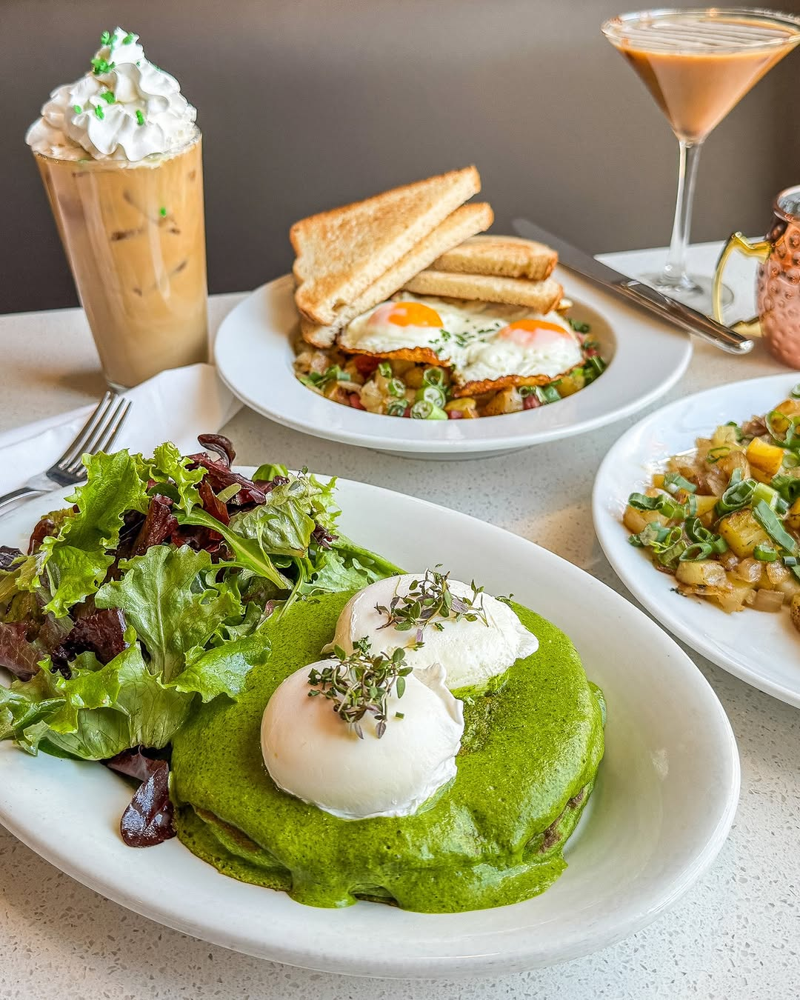

Best Brunch Spots in Madison
Bassett Street Brunch Club
Bassett Street Brunch Club provides a wide assortment of brunch classics, from eggs benedict to cinnamon French toast. Serving brunch all day, their menu feature hearty comfort food, fresh donuts, and seasonal drinks.
Short Stack Eatery
Known for their pancakes, Short Stack serves all day breakfast using locally sourced ingredients and products. Offering gluten free and vegean options, Short Stack is a local favorite.
Marigold Kitchen

Located on Capitol Square, Marigold Kitchen has a bright, modern atmosphere and is a great spot for a relaxing meal and delicious specialty beverages. Whether you're looking for a breakfast burrito or a fresh chicken salad, Marigold is the place to go.
Mickie's Dairy Bar
Mickie's is known for their hearty portions and diner-style atmosphere. They serve a variety of scramblers, omelets, and pancakes. Stop by before or after a weekend Badgers game for a delicious meal!